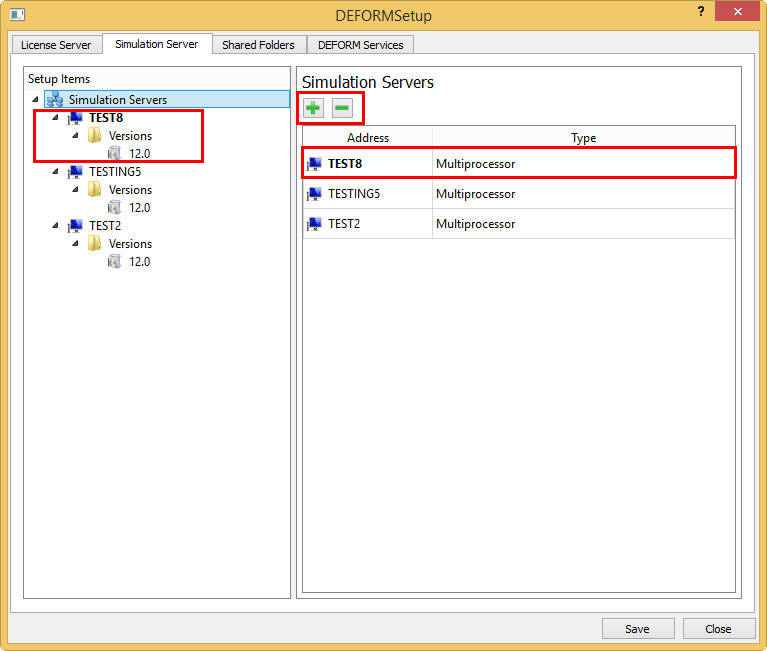
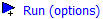
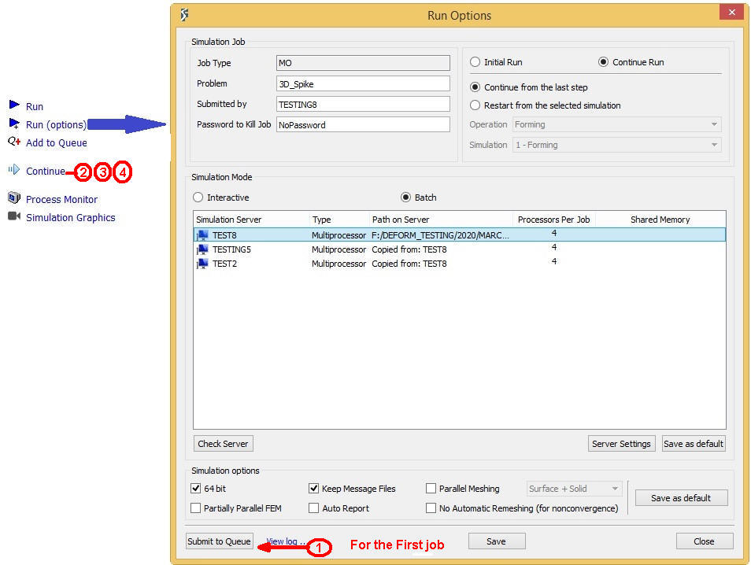
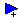
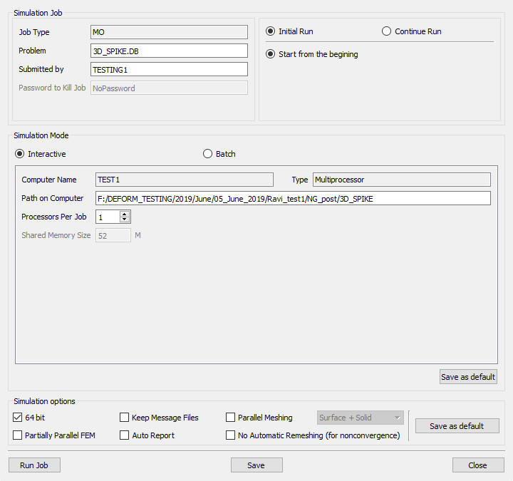
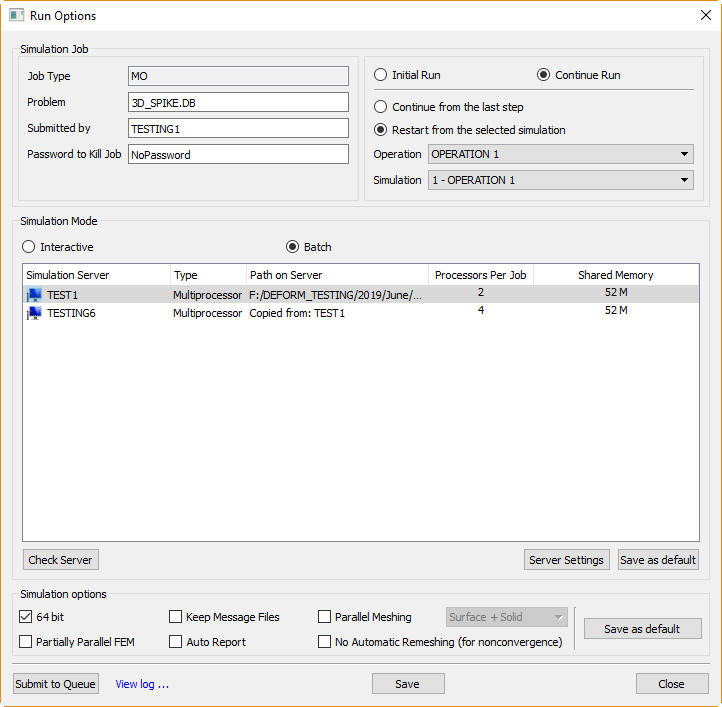
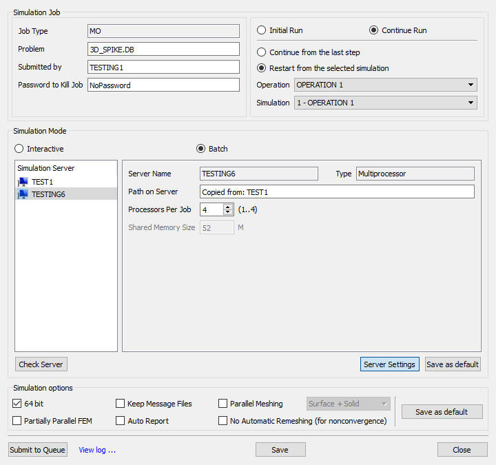
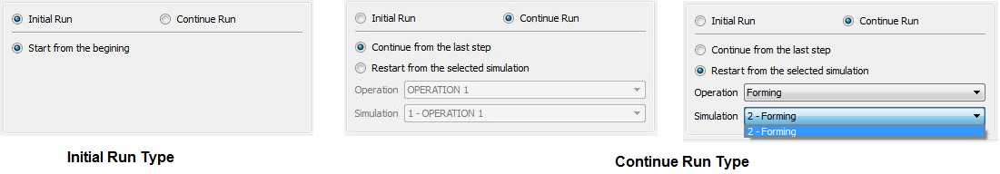

23.2.4. Run Options dialog features
If batch of problems to be simulated then after completing the previous simulation using the Run option from Integrated GUI or from Run options dialog  can be used for submitting
simulations interactively one after the other.
can be used for submitting
simulations interactively one after the other.
Interactive submission of simulations requires user monitoring to start simulation one after the other however user can use option from GUI or from Run options dialog  to pick automatically each job one after the other or simultaneously based on the simulation server settings.
to pick automatically each job one after the other or simultaneously based on the simulation server settings.
The problem running status can be monitored from the Process monitor and also for additional options related to executing of interactive and batch mode simulations refer to chapter 23.4. Process Monitor.
From version 11.0 users can submit jobs for simulation using remote machine Simulation servers in batch mode from Run options dialog. (Refer section 6.2. MO Simulation layout) This will temporarily move the jobs to remote simulation server machine for simulation, after completion of simulation it copies back the project, so it reduces the load on the local machine.
Running Batch Queue Server and Simulation Server
(Please refer to Chapter 23.6. Running Shared folder Simulations on how to setup, simulation servers, batch queue servers and handle mapped drives on a network to run DEFORM
simulations)
(Installing this Batch Queue and Simulation server services is a part of the default installation process, and the details indicated here are only standby options, if the given system has any issues/restrictions with handling the services)
If you would like to queue up jobs or run jobs on the other machine, please install simulation server.
The installations are easy, just run the provided batch files (at the DEFORM installation directory):
InstallBatchQueueServer.bat (example PC path C:\Program Files\SFTC\License Manager\)
InstallSimulationServer.bat (example PC path C:\Program Files\SFTC\DEFORM\Configuration\)
Then these two programs will also be registered as services just like the license manager. They will start automatically.
Computer configuration requirements
Simulation server: A central computer – presumably high performance – for running FEM calculations.
License server: A central computer – not necessarily high powered – for managing licenses.
Batch queue server: A central computer for managing run sequence of jobs. The License and Batch servers will run on the same machine and Simulation server must run on machines from where user submits the jobs to queue.
Pre / Post client(s): Computer at which user(s) will pre and post process simulations. Pre and post processor programs are executed on this computer.
DB file location: The database files should be on a shared network drive accessible from the simulation serer and the pre/post client computer. For optimum simulation performance, the DB files should be on a hard drive physically integrated into the simulation server. In other words, forcing the simulation server to access a database across a network will likely cause longer run times.
Simulation Server setup
On the “Simulation Server” tab, specify the share name or IP address of the simulation server machine. If it is a multi-processor or multi-core machine, specify the
number of processors (cores) available and licensed in DEFORM (Processor number) and the maximum number of jobs (normally 1). The user can use simulation and batch queue server as other than local computer by pointing it in DEFORM setup (See Fig. 23.2.1.).

DEFORM setup Simulation Server window
Run (Options) settings
After configuration, please use

settings from GUI Main to utilize batch queue and simulation server when desired.
How to add jobs in Queue:
Pick the DB from GUI Main (from working folder).
From GUI Main open .
Initial details are normally picked up from the details provided from DEFORMSetup run.
Check the servers required for batch queue status using Check Server button.
From this dialog, click on  to add the job1 to Queue.
to add the job1 to Queue.
Select job2 click on under Simulator in GUI main, repeat same for remaining jobs 3 and 4 (See Fig. 23.2.2.).

Queuing simulations from Run options
The jobs added to queue can be seen in Process Monitor window under Running and Pending list.
Once a job is finished, it is removed from the Batch Queue list and the next job waiting will take for running.
The user can change the position of the job with the help of "Move UP" (  ) and "Move Down" (
) and "Move Down" (  ) buttons and job can be removed from queue using "Terminate or Remove" button (
) buttons and job can be removed from queue using "Terminate or Remove" button (  ). (See Fig 23.4.2)
). (See Fig 23.4.2)

or Simulation menu Run (options) will provide more advanced options to run the simulation like interactive or batch mode, running with single and multiple (only for 3D) processors and 32 and 64 bit running.
: Using this option, user can run simulations without simulation server by selecting  button.
This option does not require simulation server to be running. (See Fig. 23.2.3.)
button.
This option does not require simulation server to be running. (See Fig. 23.2.3.)

Run options window for MO job in interactive simulation mode
Interactive simulation mode settings are,
Computer Name: This will display the name of the Machine
Type: This will display whether it is a Single or Multi Processor simulation
Path on Computer: This will display the path of the DB and in case of DOE/OPT it indicates the path where DB's would be generated.
Processors Per Job: Using this option user can select the number of processors required to be used per job during simulation, currently available only for 3D simulation or job.
Shared Memory Size: It displays Shared Memory allocated on the simulation server system for DEFORM simulation.
User can save the settings using button and close the Run options window using button.
: Using this option, user can run simulations only in batch mode (See Fig. 23.2.4.).
It is essential to select any one of the available simulation servers listed or first available simulation server to simulate batch queue problems and click on  button to start adding job to the queue. The displayed list contains only simulation servers that are added to the DEFORM Setup.
button to start adding job to the queue. The displayed list contains only simulation servers that are added to the DEFORM Setup.

Run options window for MO job in batch simulation mode
In Batch simulation mode selected simulation servers settings can be set by selecting the particular simulation server and clicking on  button. (See Fig. 23.2.5.)
button. (See Fig. 23.2.5.)
 : Using this button user can set the selected simulation server settings like processors to be utilized per job during simulation and shared memory.
: Using this button user can set the selected simulation server settings like processors to be utilized per job during simulation and shared memory.
Server Name: This will display the selected simulation server machine name
Type: This will display whether it is a Single or Multi Processor simulation
Path on Server: This will display path of the DB if user selected the local machine
as simulation server or else will display as "Copied from :<Phisical_DB_existing_Machine_name>"
Processors Per Job: Using this user can select the number of processors to be used
per 3D simulation or job.
Shared Memory Size: It displays Shared Memory allocated on the simulation server
system for DEFORM simulation.
User can save the settings using button and close the Run options window using button.

Batch simulation mode server settings
Simulation Run types: For normal multiple operations project in both interactive and batch mode user can run the simulation from the initial step or if it is stopped in between or wanted to restart from the mod we can do so by continue
options. (See Fig. 23.2.6.)
Initial Run: This will start the simulation from the first operation starting step. User can also use this option to restart the simulation from the beginning in case of simulation has stopped in the mid due to some license or network issues.
Continue Run: This continue run will provide two options those are,

Simulation Run types from Run options for normal projects
Related Topics:
23.8. Trouble Shooting Simulation Running
Integrated Manufacturing Process (MO)